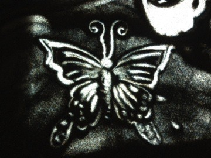

| 2014/01 13 Mon | えんどれすスン。537 回目 |
すとーるぐるぐる〜

乃木どこ隠し芸大会！
まいまい、ひめか、
私の3人が挑戦したのは
サンドアート。
いかがでしたか？
最初サンドアートをやることが
決まった時先生がやっているのを見て
なんとなくできそう
と勝手に思ってましたが...
実際やってみるとすごく難しい。
絵を描くのは得意なのですが
砂を使って描くことって、
分量だったり、払い方によって
変わるしすぐ崩れてしまって
調整するのが大変。
しかも砂を触ったのが
久しぶり過ぎて...！

↑蝶描いてみた
他のメンバーの練習してる姿を見て
自分たちも頑張らなきゃって
勇気付けられた。
練習期間の時期が
みんな忙しくて大変でしたが、
楽しくパフォーマンスできました。
先生、お忙しい中
ありがとうございました。
まいまい、ひめか
ありがとう。
これからは特技の欄に
サンドアートって書こうね笑
そして、新堂本兄弟。
おいでシャンプー歌いました！
今年を占ってもらったのですが
ランキングが13位でした。
13位...
びみょおおおぉぉおお

っはーーーーーー
コメント思ってた以上に
たくさんの方がおすすめのもの
教えてくださって嬉しかった〜
気になったものを
少しずつ見てみようと思う。
ありがとう。

今日は成人式で振袖の方が
たくさんいて華やかだったな。
成人されたみなさん
おめでとうございます！！
私はあと2年後。
振袖何色がいいかなー？
まりか
コメント(592)
2014/01/13 22:42